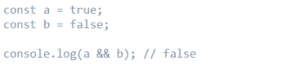
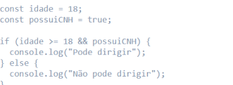
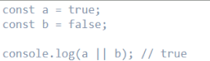
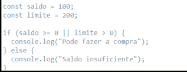
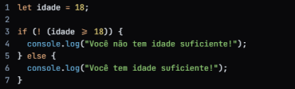

Não deixe ninguém lhe dizer que você não pode aprender JavaScript. Com muito trabalho e dedicação, você pode dominá-lo e alcançar seus objetivos!
Estruturas de repetição
Você pode fazer qualquer coisa se se dedicar, e o JavaScript não é exceção. Continue aprendendo e crescendo!
O que são?
Operadores lógicos em JavaScript são usados para combinar expressões verdadeiras ou falsas e produzir um valor verdadeiro ou falso como resultado. Existem três operadores lógicos em JavaScript: AND (&&), OR (||) e NOT (!) Cada operador lógico tem uma função específica: - AND (&&) retorna verdadeiro se todas as expressõe forem verdade - OR (||) retorna verdadeiro se pelo menos uma das expressões for verdade - NOT (!) ele faz a inverção do valor da expressão. NOT retorna falsa a expreção se ela for verdadeira e vice-versa.
AND

No exemplo acima, a variável `a` é verdadeira e a variável `b` é falsa. A expressão `a && b` retorna false, pois ambos os valores não são verdadeiros. Uma forma comum de utilizar o operador AND é em estruturas condicionais, como o if.

Nesse caso, o código verifica se a idade é maior ou igual a 18 e se a pessoa possui CNH. Somente se ambas as condições forem verdadeiras, a mensagem “Pode dirigir” será exibida.
OR

No exemplo acima, a variável `a` é verdadeira, enquanto a variável `b` é falsa. A expressão `a || b` retorna true, pois pelo menos um dos valores é verdadeiro. O operador OR também pode ser utilizado em estruturas condicionais.

Nesse caso, o código verifica se o saldo é maior ou igual a zero ou se o limite é maior que zero. Se pelo menos uma dessas condições for verdadeira, a mensagem “Pode fazer a compra” será exibida.
NOT
Aqui está um exemplo de teste do operador lógico NOT em JavaScript:
